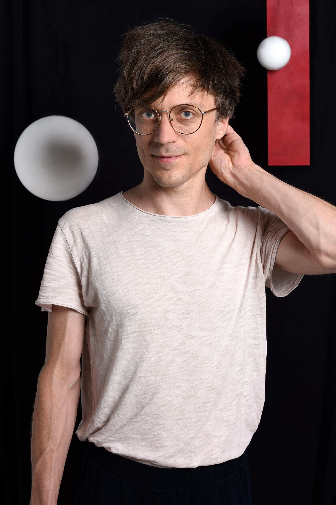

David Schrittesser
I am Professor at the Institute for Advanced Studies in Mathematics at Harbin Institute of Technology.
Earlier academic positions include Research Associate in statistics and mathematics at the University of Toronto, where I was also main organizer of the Set Theory Seminar at the Fields Institute. I was also once Hausdorff postdoc at the University of Bonn, Germany.
Teaching
- I teach the topology course (point-set topology and beginnings of algebraic topology) every winter semester. I plan to make my lecture notes available here soon.
- In 2024, I taught a course about forcing and descriptive set theory at the Tianjin Summer School in Logic.
Research Profile
My research is in mathematical logic; my primary interests are descriptive set theory, infinite combinatorics, forcing, definability, and inner models. I am also interested in non-standard analysis and its applications, especially in stochastics, statistical decision theory, and game theory. I have also collaborated in the digital humanities.
Students
Currenly, I am advising PhD students Siqi Liu and Xinyu Liu, the latter of which I am co-advising with Kevin Duanmu. The students whose theses I previously advised were:
- Severin Mejak, PhD thesis, title: Definability of maximal discrete sets. I co-advised Severin with Asger Törnquist. Severin defended in February 2023. The part of the thesis I supervised is now a joint article called ‘Definability of maximal cofinitary groups’ (see below).
- Karen Bakke Haga, PhD thesis, title: Maximal almost disjoint families, determinacy, and forcing. Karen defended on June 3, 2019. I co-advised her with Asger Törnquist.
- Dan Saattrup Nielsen, master thesis, title: Inner model theory. An introduction.
- I also advised bachelor projects by Magnus Baunsgaard Kristensen, Fraser Binns, and (co-advised) Dan Saattrup Nielsen (he wrote a thesis about Gödel's constructible universe).
Publications and preprints
All my mathematical publications and preprints are openly accessible at my arxiv author's page. The list below also contains some work in progress and my master's and doctoral theses in addition to the articles posted at my arxiv author's page.
- Loeb extension and Loeb equivalence III (with Kevin Duanmu and Xinyu Liu).
- Generalized almost disjoint families and injective Banach spaces (with Chris Lambie-Hanson).
- Maximal eventually different families for uniformly weak Ramsey ideals (with Jialiang He, Jintao Luo, and Hang Zhang).
- Two-Person adversarial games are zero-sum: An elaboration of a folk theorem (with M. Ali Khan and Arthur Paul Pedersen). Economics Letters 242 (2024) 111852.
- Cofinitary groups and projective well-orders (with Vera Fischer and Lukas Schembecker). Annals of Pure and Applied Logic, Volume 176, Issue 6, June 2025, 103570.
- de Finetti’s theorem and the existence of regular conditional distributions and strong laws on exchangeable algebras (with Peter Potaptchik and Daniel M. Roy).
- Statistical minimax theorems via nonstandard analysis (with Haosui Duanmu and Daniel M. Roy).
- Definability of maximal cofinitary groups (with Severin Mejak).
- Loeb extension and Loeb equivalence II (with Haosui Duanmu and William Weiss). Fundamenta Mathematicae.
- Admissibility is Bayes optimality with infinitesimals (with Haosui Duanmu and Daniel M. Roy).
- Constructing maximal cofinitary groups . Nagoya Mathematical Journal.
- Loeb extension and Loeb equivalence (with Robert M. Anderson, Haosui Duanmu, and William Weiss). Proceedings of the American Mathematical Society, Series B, Volume 8, Issue 10, 112–120.
- Maximal discrete sets. RIMS Kôkyûroku No. 2164, pp. 64–84.
- The Ramsey property and higher dimensional mad families (with Asger Törnquist).
- Definable MAD families and forcing axioms (with Vera Fischer and Thilo Weinert). Annals of Pure and Applied Logic, 172 (5).
- Minimal definable graphs of definable chromatic number at least three (with Raphaël Carroy, Benjamin Miller, and Zoltán Vidnyánsky). Forum Math. Sigma 9 (2021), Paper No. e7.
- The Ramsey property implies no mad families (with Asger Törnquist). Proceedings of the National Academy of Sciences.
- Good projective witnesses (with Vera Fischer, Sy Friedman, and Asger Törnquist). Annals of Pure and Applied Logic, Volume 176, Issue 8, August–September 2025, 103606.
- Lebesgue's density theorem and definable selectors for ideals (with Sandra Müller, Philipp Schlicht, and Thilo Weinert). Israel Journal of Mathematics.
- A Sacks indestructible co-analytic maximal eventually different family (with Vera Fischer). Fundamenta Mathematicae.
- Maximal almost disjoint families, determinacy, and forcing (with Karen Bakke Haga and Asger Törnquist). Journal of Mathematical Logic.
- Compactness of maximal eventually different families. Bull. London Math. Soc. 50 (2018) 340–348.
- On Horowitz and Shelah's maximal eventually different family. RIMS Kyôkyûroku No. 2042, 99–105.
- Definable discrete sets with large continuum.
- A co-analytic Cohen-indestructible maximal cofinitary group (with Asger Törnquist and Vera Fischer). The Journal of Symbolic Logic, 82(2), 627–641.
- Definable maximal discrete sets in forcing extensions (with Asger Törnquist). Math. Res. Lett. 25(5), 1591–1612, 2018.
- Projective measure without projective Baire (with Sy Friedman). Memoirs of the American Mathematical Society 267 (2020), no. 1298, v+150 pp..
- Coding over core models (with Sy Friedman and Ralf Schindler). Infinity, Computability, and Metaphysics (Geschke et al., eds.), College Publications, pp. 167–182.
- Projective measure without projective Baire. PhD thesis, University of Vienna (adviser: Sy Friedman).
- Lightface Sigma^1_2-indescribable cardinals. Proc. Amer. Math. Soc. 135, pp. 1213–1222.
- Sigma^1_3-absoluteness in forcing extensions. Master's thesis, University of Vienna (adviser: Sy Friedman).
Other publications
I also have publications in other fields than research mathematics, namely, in digital humanities, in university pedagogy, and one which tries to explain some of my mathematical research to a broader audience.
- Bridging the Gaps: Integrating Bibliographic Metadata Into Wikidata for Literary Corpora (with Katrin Rohrbacher). Journal of Open Humanities Data, 12: 37, pp. 1–12.
- Verrückte Familien. August 2020 issue of Spektrum der Wissenschaft, the German edition of Scientific American
- Research-led teaching in higher mathematics. In: Improving University Science Teaching and Learning—Pedagogical Projects 2019. Department of Science Education, University of Copenhagen.